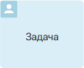
Задача выполняется сотрудником в рамках бизнес-процесса. Задачи назначаются автоматически в том порядке, в котором расположены на схеме процесса. Они отражают шаги, которые участники должны предпринять для достижения определённого результата.
Например, в процессе обработки заявки на технику сотрудники будут выполнять такие задачи, как заполнить и рассмотреть заявку, закупить технику и т. д.
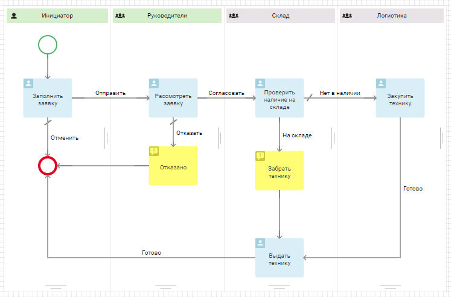
Настроить пользовательскую задачу
Все настройки выполняются на вкладках: Основное, Форма, Время выполнения, Планирование в календаре, Переходы и Замещения.
Вы можете добавить шаблон названия задачи, выбрать тип исполнения, изменить форму, указать крайний срок и т. д.
Чтобы открыть окно с настройками, дважды нажмите на блок на схеме процесса.
Вкладка «Основное»
На вкладке Основное представлена общая информация о задаче:
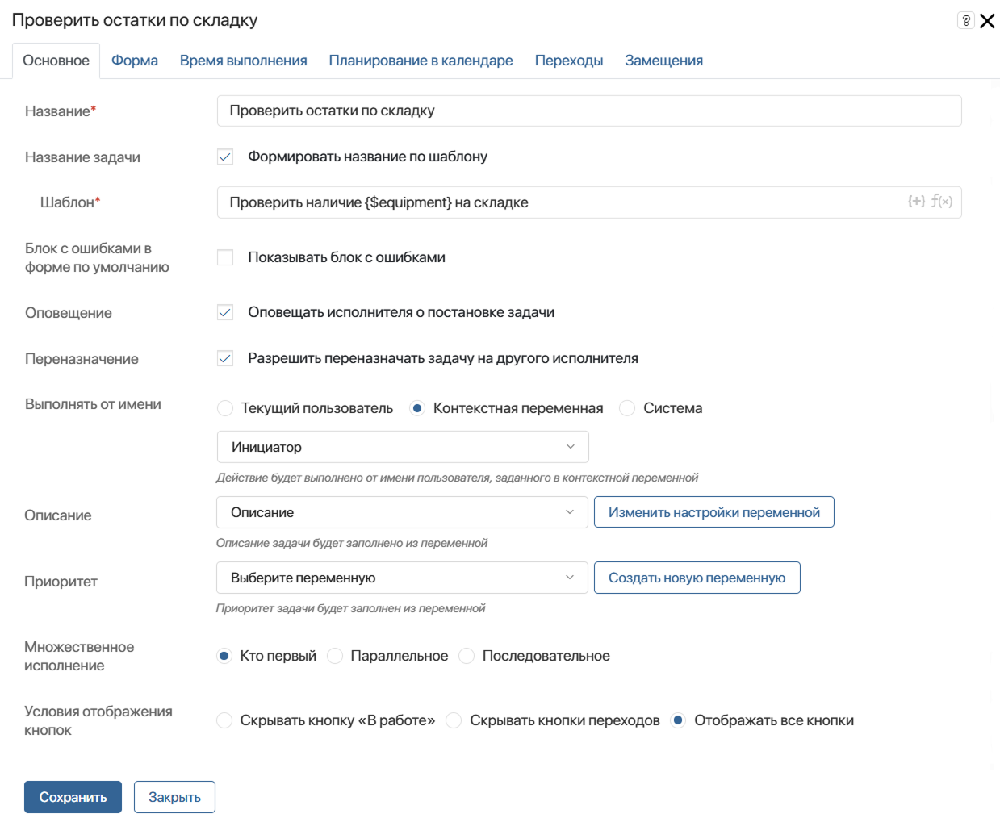
- Название* — укажите название задачи на схеме процесса. Оно должно быть кратким и ёмким, чтобы процесс легко читался;
- Название задачи — отметьте опцию Формировать название по шаблону, чтобы включить контекстные переменные в название, которое исполнитель увидит в списке задач и в карточке задачи;
- Шаблон* — в правом углу поля нажмите значок {+} и выберите переменную. Также можно добавить условия и функции для формирования названия элемента по шаблону. Это позволит сгенерировать более информативное название. Если эта опция не используется, то в списке задач и на форме будет отображаться текст, указанный в поле Название*;
- Блок с ошибками в форме по умолчанию — включите опцию, чтобы при наличии ошибок в заполнении полей на форме задачи отображался виджет со списком ошибок. Проверяется, что сведения внесены в соответствии с настройками типов данных;
- Оповещение — выберите опцию, чтобы исполнитель задачи получил в #ленту уведомление о её назначении. Чтобы исполнитель дополнительно получал уведомления о задаче на электронную почту, в настройках профиля он может включить опцию отправки оповещений о новых задачах на email;
- Переназначение — включите опцию, чтобы исполнитель мог переназначать задачу на коллег;
- Выполнять от имени — выберите, от кого будет приходить задача исполнителю:
- Текущий пользователь — автором задачи указывается пользователь, запустивший экземпляр бизнес-процесса;
- Контекстная переменная — выберите переменную типа Пользователи с типом Один из контекста процесса. Автором задачи будет значиться сотрудник, который указан в значении переменной. Например, можно выбрать пользователя, в чьей зоне ответственности на схеме процесса находились предыдущие задачи;
- Система — задача придёт от имени пользователя, назначенного на роль Супервизор системы;
- Описание — выберите переменную типа Строка из контекста процесса для отображения развёрнутого описания задачи. Значение переменной может присваиваться в рамках созданного вами скрипта на языке TypeScript. Например, вы можете разместить блок Скрипт перед задачей на схеме процесса. Вынесите переменную в настройках формы задачи;
- Приоритет — выберите переменную типа Число из контекста процесса для отображения срочности задачи. Переменную можно заполнять любым числовым значением в рамках созданного вами скрипта на языке TypeScript;
- Множественное исполнение — настройка появляется, когда в качестве исполнителя в зоне ответственности выбраны группа пользователей или отдел. Задача будет назначаться на всех сотрудников, входящих в группу или отдел. Вы можете выбрать, каким образом пользователи будут её выполнять:
- Кто первый — задача будет назначена одновременно всем сотрудникам, указанным в качестве исполнителей в зоне ответственности. Один из них сможет выполнить задачу сразу или взять её в работу, и она пропадёт из списка задач остальных исполнителей. Порядок работы с задачей можно настроить, включив одну из опций:
- Скрывать кнопку «В работе» — на форме задачи отображаются только кнопки переходов. Любой сотрудник из группы исполнителей сможет сразу закрыть задачу, не забирая её в работу. Опция подходит для задач, которые не занимают много времени.
- Скрывать кнопки переходов — изначально на форме задачи показывается только кнопка В работе. После того как сотрудник нажмёт на неё и будет назначен ответственным, на форме задачи появятся кнопки настроенных переходов.
- Отображать все кнопки — на форме задачи исполнители увидят кнопку В работе, а также кнопки всех настроенных переходов. Один из сотрудников сможет назначить задачу только на себя или сразу выполнить её.
- Параллельное — задача будет поставлена одновременно всем исполнителям, указанным в зоне ответственности. Прежде чем процесс перейдёт к следующему шагу, каждый исполнитель должен будет завершить задачу;
- Последовательное — задача будет последовательно назначаться сначала одному сотруднику, указанному в качестве исполнителя в зоне ответственности, а затем другому. Процесс перейдёт к следующему шагу после того, как все сотрудники выполнят задачу.
Если выбран вариант Параллельное или Последовательное исполнение, то:
- укажите переход по умолчанию на вкладке Переходы;
- можете задать условия в настройках перехода. Подробнее об этом читайте в статье «Переходы».
Обратите внимание, для динамической зоны ответственности задачи назначаются в той последовательности, в которой заполнялась переменная, хранящая исполнителей. Для статической зоны ответственности последовательность определяется случайным образом.
Приведём несколько примеров, чтобы нагляднее объяснить, в каких случаях используется тот или иной тип множественного исполнения.
начало примера
Пример 1
Рассмотрим работу склада. Подготовить заказ к отправке может любой сотрудник. Не имеет значения, кто именно будет заниматься комплектацией и упаковкой, существенно лишь, чтобы задача была выполнена максимально быстро. Если вы выберете опцию Кто первый, задача придёт каждому сотруднику склада, и тот, кто менее загружен в данный момент, сможет сразу приступить к выполнению. Как только система получит подтверждение, что работа начата (для этого нужно нажать на кнопку в карточке задачи), она отменит задачу для других сотрудников.
конец примера
начало примера
Пример 2
Рассмотрим задачу ознакомления с результатами совещания. После того как совещание проведено, его итоги фиксируются и отправляются участникам. Нам важно, чтобы каждый сотрудник, присутствовавший на совещании, прочитал эту информацию, но последовательность, с которой задача будет выполняться, не имеет значения. Если вы выберете опцию Параллельное исполнение, все участники совещания получат задачу Ознакомиться с итогами, и пока каждый из них не завершит работу, процесс не двинется дальше.
конец примера
начало примера
Пример 3
Предположим, нам необходимо, чтобы несколько руководителей прочитали и утвердили отчёт, прежде чем процесс продолжится. Если вы выберете опцию Последовательное исполнение, то система назначит задачу рассмотрения сначала одному руководителю, а после того, как он утвердит отчёт, — другому. В настройках перехода вы можете указать, каким образом поступить, если кто-то из согласующих отклонит отчёт. Подробнее о том, как это сделать, читайте в статье «Переходы».
конец примера
Вкладка «Форма»
На этой вкладке определяется внешний вид формы задачи.
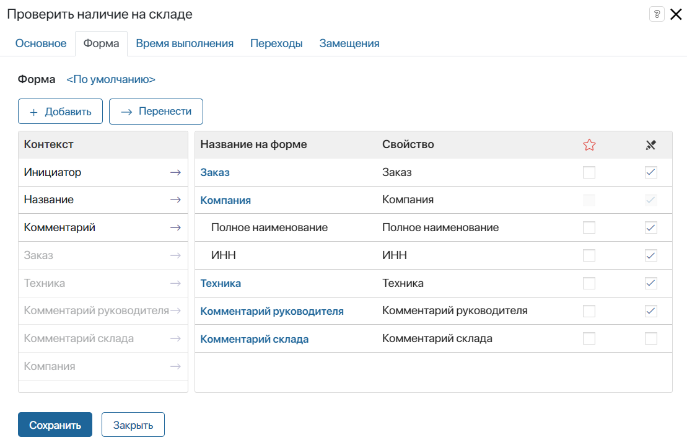
В столбце Контекст перечислены поля, добавленные в контекст процесса. Чтобы они отображались в карточке задачи, перетащите их в столбец Название на форме. Выберите обязательные для заполнения поля  и укажите свойства, доступные только для чтения
и укажите свойства, доступные только для чтения  .
.
Чтобы создать новое свойство, нажмите кнопку + Добавить. Свойство появится в столбце Контекст, а также в контексте процесса.
Настройки отображения свойства
Чтобы изменить настройки поля, нажмите на него в столбце Название на форме. Вы можете отредактировать название и текст подсказки, управлять обязательностью заполнения и т. д.
Для поля типа Приложение в зависимости от его настроек доступны дополнительные вкладки:
- если опция Только для чтения включена, появляется вкладка Свойства.
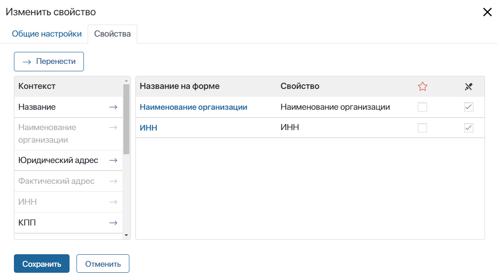
На этой вкладке в столбце Контекст показаны свойства выбранного приложения. Вы можете добавить их на форму задачи, перетащив в столбец Название на форме. Свойства отобразятся в карточке задачи под полем приложения;
- если опция Только для чтения отключена, доступна вкладка Добавление элемента.
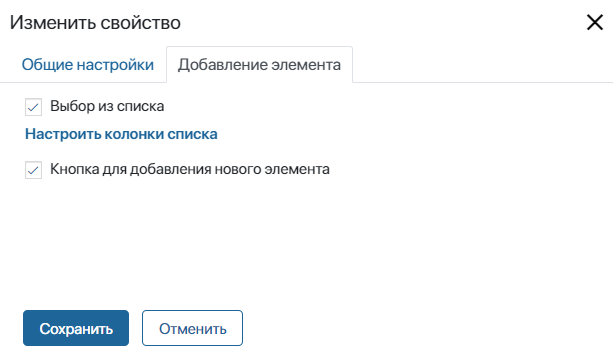
Здесь вы можете указать, каким образом поле будет заполняться.
Чтобы разрешить пользователю выбрать существующий элемент приложения, отметьте опцию Выбор из списка. Вы можете изменить таблицу отображения записей в окне выбора элемента, нажав Настроить колонки списка. В открывшемся окне добавьте поля, которые будут использоваться как столбцы таблицы, и настройте сортировку.
Чтобы пользователь смог добавить новую запись с карточки задачи при помощи кнопки + Создать, включите опцию Кнопка для добавления нового элемента.
Если поле на форме задачи является редактируемым, а у пользователя нет соответствующего доступа к приложению, он автоматически получит возможность заполнять поле на форме задачи. Пользователь не получает прямого доступа к приложению и не сможет редактировать его поля после заполнения формы.
Вы можете изменить стандартную форму задачи и создать шаблон в Low‑code дизайнере. Подробнее об этом читайте в статье «Вкладка „Формы“».
Вкладка «Время выполнения»
Для некоторых задач время выполнения — критичный показатель. Особенно это касается работы с клиентами. Быстро обработанная заявка, вовремя доставленный товар обеспечивают ваше конкурентное преимущество.
На этой вкладке вы можете настроить сроки выполнения задачи, а также определить, что произойдёт, если в указанное время задача сделана не будет.
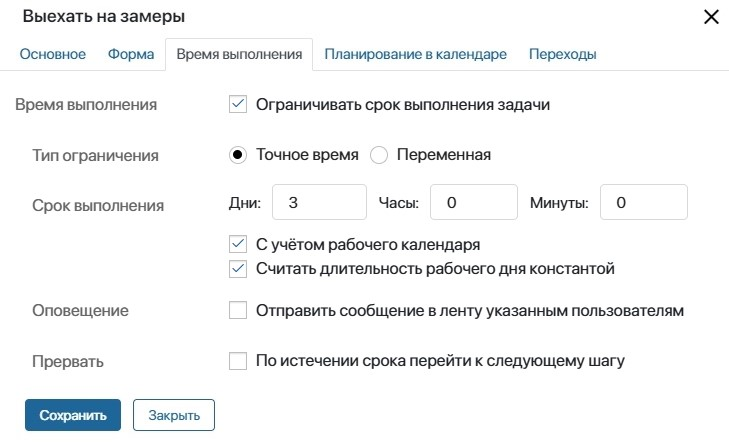
Задать срок выполнения задачи можно двумя способами:
- Переменная — иногда определить точное время работы в часах невозможно, но при этом важно, чтобы задача была выполнена к определённому сроку. Например, сотрудник указывает даты отпуска, а бухгалтер должен рассчитать сумму отпускных и выдать деньги до того момента, как сотрудник уйдёт отдыхать. В этом случае обозначьте время завершения задачи контекстной переменной и укажите её в поле Срок выполнения;
- Корректировать время — настройка позволяет прибавлять или убавлять дни, часы и минуты к тому времени, что хранится в переменной. Выберите опцию Добавить или Вычесть и введите величину корректировки. Срок выполнения задачи увеличится или уменьшится на указанное вами количество времени.
При уточнении срока выполнения задачи вы можете активировать следующие опции:
- С учётом рабочего календаря — время выполнения рассчитывается согласно рабочему календарю и не включает нерабочие часы сотрудника;
- Считать длительность рабочего дня константой — опция доступна при учёте рабочего календаря. Она позволяет высчитывать срок завершения задачи исходя из количества рабочих часов в день. Для расчёта используется время, указанное в настройках рабочего календаря в поле Стандартный режим работы.
начало внимание
Если настройки календаря редактируются, нужно опубликовать процесс повторно, чтобы применить новый график работы для сроков выполнения задач.
конец внимание
Примеры расчёта срока выполнения задач
При установке срока выполнения без дополнительных опций будут учитываться только указанные дни, часы и минуты. Задача может быть просрочена в нерабочее время сотрудника. Например, пользователь работает с понедельника по пятницу с 9:00 до 18:00. Ему назначена задача сроком два дня в пятницу в 17:00. Это значит, что она будет считаться просроченной завтра в 24:00. Если вы установили срок шесть часов, задача будет просрочена сегодня в 22:00.
Допустим, вы назначили задачу тому же пользователю, так же сроком два дня, в пятницу в 17:00, но с учётом его рабочего календаря. В этом случае первым днём для работы над задачей будет пятница, а срок завершения будет в понедельник в 18:00. Суббота и воскресенье из расчёта исключены как выходные. Если вы установили срок в часах, задача будет просрочена в понедельник в 15:00. Засчитаются один рабочий час в пятницу и пять часов в понедельник. Время с 13:00 до 14:00 обеденное.
При использовании рабочего календаря вы также можете учитывать количество рабочих часов в день с помощью опции Считать длительность рабочего дня константой. Тогда в нашем примере при времени выполнения задачи в днях она будет просрочена во вторник в 17:00. Стандартное количество рабочих часов у пользователя — восемь. В пятницу у него только один час для работы над задачей, суббота и воскресенье выходные, в понедельник полный день восемь часов, и недостающие семь часов переносятся на дополнительный день. На расчёт срока выполнения задачи в часах использование опции не влияет, так как по умолчанию учитываются рабочие часы сотрудника.
Если за пользователем закреплён календарь, в котором каждый день разное количество рабочих часов, опция Считать длительность рабочего дня константой будет учитывать время, указанное в настройках календаря в поле Стандартный режим работы. В этом случае может возникнуть ситуация, что задача будет просрочена в нерабочие часы сотрудника. Либо фактический срок её выполнения отодвинется на несколько дней. При учёте рабочего календаря с ненормированным режимом работы рекомендуем устанавливать срок выполнения в часах и минутах без использования опции Считать длительность рабочего дня константой. |
Может случиться так, что задача не будет выполнена к указанному времени, несмотря на установленные сроки. В этом случае нужны инструменты контроля, позволяющие вовремя отреагировать на ситуацию и принять необходимые меры.
В поле Оповещение вы можете указать сотрудников, которые получат уведомление, если исполнитель не уложится в срок. В качестве получателя можно добавить текущего пользователя, контекстную переменную (например, инициатора), группу пользователей или элемент оргструктуры.
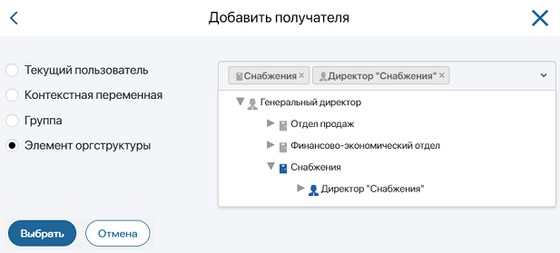
В поле Прервать определите, каким будет следующий шаг в процессе, если исполнитель вовремя не завершит задачу.
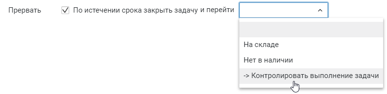
Указанный переход выберется автоматически, если установленное время истечёт, а исполнитель не подтвердит, что задача выполнена. На схеме процесса такой переход отмечается значком с часами.
Начало внимание
Переход, указанный в поле Прервать, не отображается в виде кнопки в карточке задачи.
Конец внимание
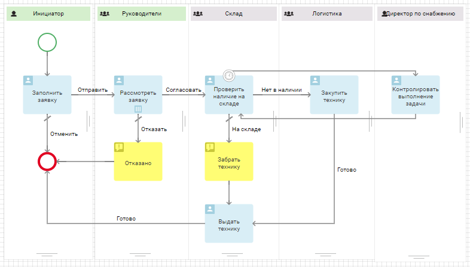
Например, для компании очень важно соблюдать сроки обработки заказов. Работники склада должны вовремя проверять наличие товара и при необходимости производить закупки отсутствующих позиций. Время выполнения этой задачи ограничено. Если сотрудник не уложится в срок, руководителю склада автоматически придёт сообщение об этом.
Вкладка «Планирование в календаре»
Эта вкладка появится, если время выполнения задачи ограничено. Здесь вы можете включить отображение задачи в календаре исполнителя.
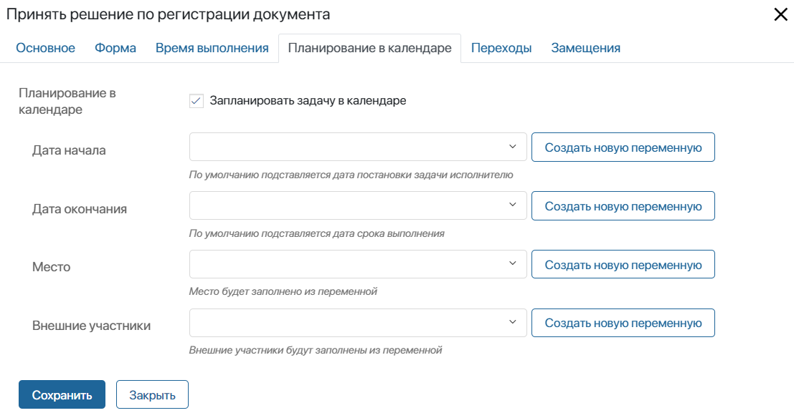
- Дата начала, Дата окончания — укажите переменные из контекста процесса с типом Дата/время, в которых хранятся даты начала и завершения задачи. С помощью этих переменных задаётся срок, на который событие будет отображаться в календаре пользователя. Значения переменных могут присваиваться в рамках созданного вами скрипта на языке TypeScript. Например, вы можете разместить блок Скрипт перед задачей на схеме процесса.
Чтобы не перегружать календарь, можно запланировать задачу в нём только на определённые дни. Например, если срок выполнения задачи составляет неделю, можно отобразить её в календаре только на три последних дня этого срока. Для этого:
- Добавьте в контекст процесса переменные типа Дата/время, в которые запишутся значения для сроков задачи в календаре.
- На схеме процесса до блока Задача разместите скрипт, вычисляющий значения этих переменных.
- На текущей вкладке свяжите поля Дата начала и Дата окончания с этими переменными.
- Место — выберите переменную типа Строка, в которой хранится место проведения события;
- Внешние участники — укажите, какие клиенты из приложения Контакты будут принимать участие в выполнении задачи. Для этого выберите переменную типа Приложение, которая ссылается на приложение Контакты из раздела CRM и может хранить Несколько значений. Вы можете выбрать существующую переменную в выпадающем списке или создать новую.
Вкладка «Переходы»
На этой вкладке вы можете настроить все исходящие переходы задачи: редактировать название, добавить текст подтверждения, выбрать цвет кнопки и т. д. Чтобы перейти к настройкам, нажмите название перехода. Подробнее об этом читайте в статье «Переходы».
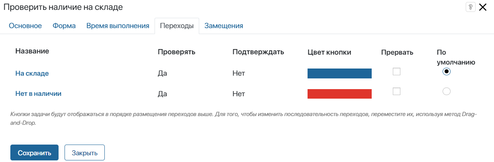
Если вы выбрали Параллельное или Последовательное исполнение, то на вкладке Переходы появятся дополнительные настройки:
- Прервать — включите опцию, чтобы при выборе перехода одним пользователем задача отменилась у остальных сотрудников;
- По умолчанию — укажите переход, по которому продолжится процесс, если никто из участников не выберет другие варианты. Подробнее про использование этой опции читайте в статье «Примеры настройки переходов».
Вкладка «Замещения»
На этой вкладке вы можете указать переменную, которая управляет переназначением задачи на сотрудника, замещающего основного исполнителя.
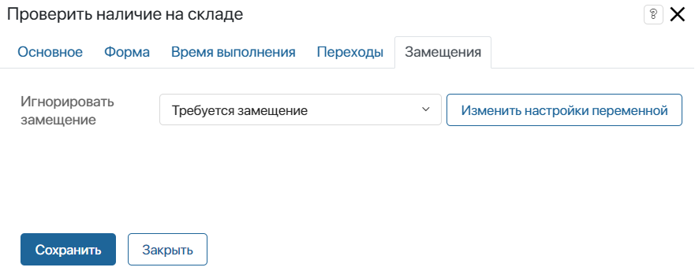
В поле Игнорировать замещение укажите переменную из контекста бизнес-процесса типа Выбор «да/нет».
Если в переменной установлено значение Да, задача придёт изначально указанному исполнителю, а при значении Нет — замещающему его сотруднику. Значение переменной можно изменять в ходе бизнес‑процесса, например, вынести переменную на форму другой задачи, либо с помощью скриптов.
Например, игнорировать замещение можно, если задача содержит конфиденциальные данные, которые не должны быть переданы третьим лицам.